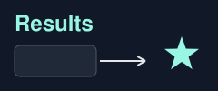
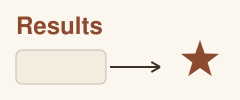
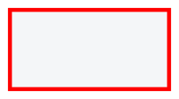
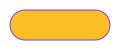
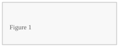

Themes¶
A theme is a palette, fonts and the styles of named roles. Elements say what they are
(as_role("box"), as_role("title")) rather than which colors they use, and the document’s theme
decides how each role looks. Changing the theme restyles the whole drawing.
import svgwriter as svg
doc = svg.Document(240, 100, theme="dark")
doc.rect(0, 0, 240, 100).as_role("background")
doc.text("Results", x=16, y=34).as_role("title")
doc.rect(16, 50, 90, 34, rx=6).as_role("box")
doc += svg.paths.star(200, 60, 20, 8) # builder shapes carry roles already
doc += svg.paths.arrow(110, 67, 160, 67)
dark = doc.at(0) # a still of the dark one, to compare
doc.theme = "paper" # restyle everything
print(doc.to_string()[:200])


Roles in the output¶
The SVG gets one <style id="svgwriter-theme"> holding a .role-<name> rule for each role in use
(arrow.head becomes .role-arrow-head), and elements get the matching class. Nothing else changes, so
the file stays portable: browsers, editors and every svgwriter renderer and exporter (PNG, PDF, EPS,
PowerPoint, …) resolve the sheet. A themed file read back with Document.open keeps its sheet; setting
doc.theme replaces the rules on output.
Corner radii and radius (rx, ry, r) are geometry, which SVG 1.1 style sheets cannot set, so a role
that gives them writes them as attributes on its elements instead (an rx set on the element wins):
theme.replace(roles={"card": {"fill": "{surface}", "rx": "6"}}) rounds every card.
Role rules override plain attributes, as CSS rules do. as_role moves the presentation attributes already
on an element into its inline style, so values given when the element is made still win:
import svgwriter as svg
warn = svg.rect(0, 0, 40, 20, stroke="red").as_role("box") # fill from the theme, stroke red
print(warn.style["stroke"], warn.classes)

Builder presets work the same way: svg.paths.star(..., fill="gold") keeps its gold fill and takes the
rest of the shape role.
Standard roles¶
Role |
Look |
|---|---|
|
filled with |
|
|
|
filled with |
|
filled with |
|
unfilled, thin |
|
unfilled, |
|
|
|
filled with |
|
|
|
filled with |
|
|
|
bold |
|
|
|
bold |
|
filled with the status colors |
Built-in themes¶
Theme |
Character |
|---|---|
|
the default: slate text, teal titles and shapes, amber dots |
|
light text on near-black, mint titles |
|
warm cream ground, brown ink |
|
for papers: serif fonts, dark grey text, ink-blue emphasis, orange second colour, no shadow |
|
black and white only, black borders and hard shadows |
|
dark paper: warm off-white on charcoal, pale blue accent, faint light shadow |
|
yellow ground, black 2px borders and hard shadows, electric blue, heavy weights |
|
the Dracula palette, dark and light |
|
the One palettes, dark and light |
Body and caption text in every built-in theme meets WCAG AA contrast (4.5:1) against both background
and surface; titles, which are large, meet 3:1. svg.themes.get(name) returns one;
svg.themes.list() lists them, svg.themes.register(theme) registers your own under its name, and
svg.themes.unregister(name) removes it again. A package can ship themes through the svgwriter.theme
entry-point group (see Extending svgwriter).
dracula and alucard follow the Dracula palette (MIT licensed, draculatheme.com); one-dark and
one-light follow Atom’s One Dark and One Light themes (MIT licensed). Where an official comment grey is
too faint for caption text, the theme uses a lighter grey from the same palette.
Palette roles: background, foreground, surface, border, muted, primary, on_primary (ink on
primary), secondary, accent, success, warning, error, shadow. Unless a theme gives them, four
are expressions over the others:
Role |
Default |
|---|---|
|
|
|
|
|
|
|
|
Variants¶
Themes are immutable. replace builds a variant: palette entries, font values and role properties merge
into the original. Palette entries can be functions of the palette and role values functions of the
theme, written with the typed Color methods (lighten, darken, mix, with_alpha), so derived values
follow their sources:
import svgwriter as svg
brand = svg.themes.get("light").replace(
name="brand",
palette={"primary": "#7c3aed", "border": lambda p: p.primary.mix(p.background, 0.6)},
fonts={"family": "Georgia, serif", "sizes": {"title": 28}},
roles={
"box": {"stroke-width": 2}, # merged into the existing box role
"badge": lambda t: {"fill": t.palette.accent, "stroke": t.palette.primary}, # a new role
},
)
print(brand.style("box"), brand.style("badge"))
tag = svg.Document(120, 50, theme=brand)
tag.rect(10, 10, 100, 30, rx=15).as_role("badge")

A role value may also be a reference, "{palette.primary}" or "{fonts.sizes.title}", alone or inside
text ("1px solid {palette.border}"), or an expression starting with =. Unknown roles and references and reference cycles
raise svg.errors.ThemeError with the path of the value.
Expressions¶
An expression starts with =, like a spreadsheet formula: "=readable({palette.primary})",
"={fonts.sizes.text} * 1.5" (spaces after the = are fine). A text value without the = is never
evaluated: a color, a lone reference such as "{palette.primary}", or CSS text with its references filled
in, so "1px solid {palette.border}", "12px/1.5 serif" and "-0.02em" stay exactly as written.
Palette entries and role values can compute from other values this way, in Python and in theme files alike.
Derived values follow their sources: replacing primary changes everything computed from it.
import svgwriter as svg
brand = svg.themes.get("light").replace(
palette={
"primary": "#7c3aed",
"on_primary": "=readable({palette.primary})",
"accent": "=mix({palette.primary}, {palette.background}, 0.4, 'oklch')",
},
roles={"badge": {
"fill": "=lighten({palette.accent}, 0.2)",
"font-size": "={fonts.sizes.text} * 1.5",
"opacity": "=if(is_dark({palette.background}), 0.9, 0.7)",
}},
)
print(brand.palette.on_primary.hex, brand.style("badge"))
tag = svg.Document(120, 50, theme=brand)
tag.rect(10, 10, 100, 30, rx=15, stroke="#7c3aed", stroke_width=2).as_role("badge")
Kind |
Forms |
|---|---|
Colors |
anything |
Numbers |
|
Text |
|
Conditions |
|
References |
|
Arithmetic |
|
Comparisons |
|
Logic |
|
Function |
Result |
|---|---|
|
|
|
|
|
|
|
|
|
HSL saturation raised or lowered |
|
hue turned by |
|
grey of the same luminance; inverted channels |
|
WCAG relative luminance, 0 to 1 |
|
WCAG contrast ratio, 1 to 21 |
|
a condition |
|
of |
|
the smallest or largest number |
|
|
|
|
|
|
A palette entry must come out as a color; a role value as a color, number or text (a condition alone is
an error: choose with if). Saving a theme writes expressions back as given, = included.
[palette]
primary = "#38bdf8"
on_primary = "=readable({palette.primary})"
border = "=mix({palette.foreground}, {palette.background}, 0.6, 'oklab')"
[roles.badge]
fill = "{palette.primary}"
stroke = "=darken({palette.primary}, 0.3)"
stroke-width = "=max(1, {fonts.sizes.text} / 10)"
Safety¶
Nothing in an expression, or anywhere in a theme file, runs Python. Expressions are read by a dedicated
tokenizer and parser and evaluated over a fixed table of the functions above, each mapped to one
svg.Color method or arithmetic helper; there is no eval, exec or compile, no attribute access,
no imports and no string formatting, and names in a file are never looked up as Python names. Text without
= is never evaluated at all. After =, anything outside the language is an error: names that are not
functions from the table (=__import__('os'), =eval(...), =a.b()), unsupported operators (**, %)
and exponents (9e999). Limits keep evaluation small:
Limit |
Value |
|---|---|
Expression length |
512 characters |
Nesting of parentheses, calls and unary operators |
32 levels |
Chain of palette references |
16 levels; cycles are errors |
Size of any number, written or computed |
1,000,000 |
Arguments of |
16 |
Every error is a ThemeError that names the key, and the file when one was loaded, with a short reason:
night.toml: palette.accent: lighten(): argument 2 must be between 0 and 1, got 5.
Using a theme¶
svg.Document(theme=...)takes aThemeor a registered name;doc.themereads or changes it.with theme:makes a theme the default for documents created in the block. It is a context variable, so threads and async tasks each keep their own; outside any block the default islight.theme.style(role)gives a role’s resolvedStyle, for elements styled inline instead of by class;theme.palette.primarygives a single color.
import svgwriter as svg
with svg.themes.get("print"):
figure = svg.Document(200, 80)
figure.rect(4, 4, 192, 72).as_role("box")
figure.text("Figure 1", x=16, y=50).as_role("caption")
print(figure.theme.name, svg.Theme.current().name)

Theme files¶
theme.save(path) writes TOML and svg.Theme.load(path) reads it. A file extends a registered theme
(light unless extends says otherwise) and holds only literals, references and
expressions; nothing in it runs.
name = "night"
extends = "dark"
[palette]
primary = "#38bdf8"
accent = "{palette.primary}"
on_primary = "=readable({palette.primary})"
[fonts.sizes]
title = 26
[roles.title]
fill = "{palette.primary}"
[roles."arrow.head"]
fill = "{palette.accent}"
Values are text (colors, CSS, references or = expressions), numbers, or color arrays: [r, g, b] or
[r, g, b, a], either all floats from 0 to 1 or all integers from 0 to 255 (a mix is an error). Font
sizes and weights are numbers. fonts.family and fonts.monospace are a family name or a list of font
files, relative to the theme file, loaded as an svg.Typeface (see Typography).
save writes what differs from the theme it extends: a variant made with replace on a registered theme
extends that theme, so svg.themes.get("dark").replace(name="night").save(path) writes two lines. References
and expressions are written as given, so they stay live; only values given as Python functions are written
as the colors and numbers they produce (a role given as a function is written as the properties it returns,
which a reader merges over the extended role). A theme read from a file remembers the file: saving it, or a
replace variant of it, edits that text, so comments, blank lines and key order stay, and only edited or
new keys change. A theme built directly with svg.Theme(...) is written in full.
import svgwriter as svg
night = svg.Theme.from_toml("""
# Night, for slides
extends = "dark"
[palette]
primary = "#38bdf8" # sky blue
""")
print(night.replace(palette={"accent": "{palette.primary}"}).to_toml())